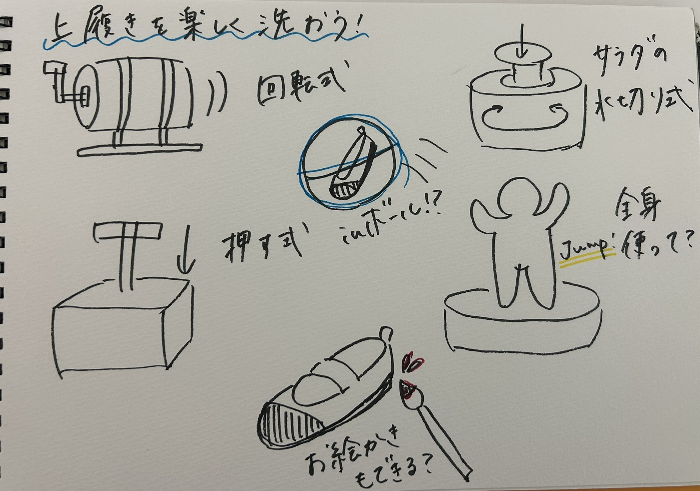

2024.05.31
上履き
アイデアスケッチ

上履きを楽しく洗うためには、どうしたらいい？
インタビューで聞いた上履き以外の悩みからもアイデアを出すヒントが得られた。
・日中外に出たり、運動したりしないことから夜暴れる→身体を動かす要素を入れる
・趣味はお絵描き→絵を描く要素を入れる
話し合いの結果、アイデアスケッチにあるアイデア６つが出された。
このアイデアの中から、設計のしやすさ、ワクワク感、汚れが落ちるかどうかを考慮し、
回転式のアイデア
を作ってみることに決定！
次回、設計開始！
第２回へ